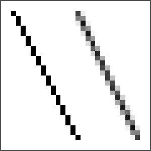
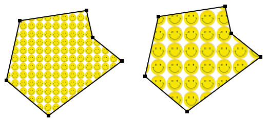
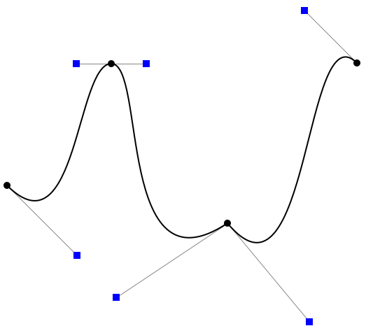

Transforms are only one example of the advanced graphics capabilities that were introduced with the Graphics2D class. Others include translucent colors, textures and gradients, wide lines, dotted and dashed lines, antialiasing, and the ability to draw using real-number coordinates. In this section, we look at some of these features, especially those that are most relevant to computer graphics more generally.
Aliasing is a problem for raster-type graphics in general, caused by the fact that raster images are made up of small, solid-colored pixels. It is not possible to draw geometrically perfect pictures by coloring pixels. A diagonal geometric line, for example, will cover some pixels only partially, and it is not possible to make a pixel half black and half white. When you try to draw a line with black and white pixels only, the result is a jagged staircase effect. This effect is an example of aliasing. Aliasing can also be seen in the outlines of characters drawn on the screen and in diagonal or curved boundaries between any two regions of different color. (The term aliasing likely comes from the fact that most pictures are naturally described in real-number coordinates. When you try to represent the image using pixels, many real-number coordinates will map to the same integer pixel coordinates; they can all be considered as different names or "aliases" for the same pixel.)
Antialiasing is a term for techniques that are designed to mitigate the effects of aliasing. The idea is that when a pixel is only partially covered by a shape, the color of the pixel should be a mixture of the color of the shape and the color of the background. When drawing a black line on a white background, the color of a partially covered pixel would be gray, with the shade of gray depending on the fraction of the pixel that is covered by the line. (In practice, calculating this area exactly for each pixel would be too difficult, so some approximate method is used.) Here, for example, are two lines, greatly magnified so that you can see the individual pixels. The one on the right is drawn using antialiasing, while the one on the left is not:

Note that antialiasing does not give a perfect image, but it can reduce the "jaggies" that are caused by aliasing.
You can turn on antialiasing in a Graphics2D, and doing so is generally a good idea. To do so, simply call
g2.setRenderingHint(RenderingHints.KEY_ANTIALIASING,
RenderingHints.VALUE_ANTIALIAS_ON);
where g2 is the Graphics2D drawing context. This causes subsequently drawn shapes to be antialiased. Antialiasing can be applied to lines, to text, and to the curved shapes such as ellipses. Note that turning on antialiasing is considered to be a "hint," which means that its exact effect is not guaranteed. In general, though, it does give an improved image. Turning antialiasing on does slow down the drawing process, and the slow-down might be noticeable when drawing a complex image.
Drawing in the Graphics class is done using integer coordinates, with the measurement given in pixels. This works well in the standard coordinate system. However, once we have the ability to apply coordinate transformations, it no longer makes sense, since the unit of measure in a transformed coordinate system will not be equal to a pixel. One unit of length might cover many pixels or a small fraction of a pixel. The solution is to use real-number coordinates for drawing.
In Java, the package java.awt.geom provides support for shapes defined using real number coordinates. For example, the class Line2D in that package represents line segments whose endpoints are given as pairs of real numbers. (Although the older drawing methods such as drawLine use integer coordinates, it's important to note that any shapes drawn using these methods are subject to the same transformation as shapes such as Line2Ds that are specified with real number coordinates. For example, drawing a line with g.drawLine(1,2,5,7) will have the same effect as drawing a Line2D that has endpoints (1.0,2.0) and (5.0,7.0). In fact, all drawing is affected by the transformation of coordinates, even, somewhat disturbingly, the width of lines and the size of characters in a string.)
Java has two primitive real number types: double and float. The double type can represent a larger range of numbers, with a greater number of significant digits, than float, and double is the more commonly used type. In fact, doubles are simply easier to use in Java. However, float values generally have enough accuracy for graphics applications, and they have the advantage of taking up less space in memory. Furthermore, computer graphics hardware often uses float values internally.
So, given these considerations, the java.awt.geom package actually provides two versions of each shape, one using coordinates of type float and one using coordinates of type double. This is done in a rather strange way. Taking Line2D as an example, the class Line2D itself is an abstract class. It has two subclasses, one that represents lines using float coordinates and one using double coordinates. The strangest part is that these subclasses are defined as static nested classes inside Line2D: Line2D.Float and Line2D.Double. This means that you can declare a variable of type Line2D, but to create an object, you need to use Line2D.Double or Line2D.Float:
Line2D line1 = new Line2D.Double(1,2,5,7); // Line from (1.0,2.0) to (5.0,7.0) Line2D line2 = new Line2D.Float(2.7F,3.1F,1.5F,7.1F); // (2.7,3.1) to (1.5,7.1)
For simplicity, you might want to stick to one of the types Line2D.Double or Line2D.Float, treating it as a basic type. Line2D.Double will be more convenient to use. Line2D.Float might give better performance, especially if you also use variables of type float to avoid type-casting.
Let's take a look at some of the classes in package java.awt.geom. I will discuss only some of their properties; see the API documentation for more information. The abstract class Point2D—and its concrete subclasses Point2D.Double and Point2D.Float—represents a point in two dimensions, specified by two real number coordinates. A point can be constructed from two real numbers ("new Point2D.Double(1.2,3.7)"). If p is a variable of type Point2D, you can use p.getX() and p.getY() to retrieve its coordinates, and you can use p.setX(x), p.setY(y), or p.setLocation(x,y) to set its coordinates. If pd is a variable of type Point2D.Double, you can also refer directly to the coordinates as pd.x and pd.y (and similarly for Point2D.Float). Other classes in java.awt.geom offer a similar variety of ways to manipulate their properties, and I won't try to list them all here.
In addition to Point2D, java.awt.geom contains a variety of classes that represent geometric shapes, including Line2D, Rectangle2D, RoundRectangle2D, Ellipse2D, Arc2D, and Path2D. All of these are abstract classes, and each of them contains a pair of subclasses such as Rectangle2D.Double and Rectangle2D.Float. Each of these classes implements the interface java.awt.Shape, which represents the general idea of a geometric shape. Some shapes, such as rectangles, have interiors that can be filled; such shapes also have outlines that can be stroked. Some shapes, such as lines, are purely one-dimensional and can only be stroked.
Aside from lines, rectangles are probably the simplest shapes. A Rectangle2D has a corner point (x,y), a width, and a height, and can be constructed from that data ("new Rectangle2D.Double(x,y,w,h)"). The corner point (x,y) specify the minimum x- and y-values in the rectangle. For the usual pixel coordinate system, (x,y) is the upper left corner. However, in a coordinate system in which the minimum value of y is at the bottom, (x,y) would be the lower left corner. The sides of the rectangle are parallel to the coordinate axes. A variable r of type Rectangle2D.Double or Rectangle2D.Float has public instance variables r.x, r.y, r.width, and r.height. If the width or the height is less than or equal to zero, nothing will be drawn when the rectangle is filled or stroked. A common task is to define a rectangle by two corner points (x1,y1) and (x2,y2). This can be accomplished by creating a rectangle with height and width equal to zero and then adding the second point to the rectangle. Adding a point to a rectangle causes the rectangle to grow just enough to include that point:
Rectangle2D.Double r = new Rectangle2D.Double(x1,y1,0,0); r.add(x2,y2);
The classes Line2D, Ellipse2D, RoundRectangle2D and Arc2D create other basic shapes and work similarly to Rectangle2D. Path2D is more interesting; I will discuss it below.
Originally, Java could draw only with basic, solid colors. With Graphics2D, Java introduced the more general idea of paint. A paint can be used both to stroke and to fill shapes. An object of type Paint is used to assign color to each pixel that is "hit" by a drawing operation. Paint is an interface, and the Color class implements the Paint interface. When a color is used for painting, it applies the same color to every pixel that is hit. However, there are other types of paint where the color that is applied to a pixel depends on the coordinates of that pixel. Standard Java includes several classes that define paint with this property: TexturePaint and three gradient paint classes. In a gradient, the color that is applied to pixels changes gradually from one color to anotehr as you move from point to point. In a texture, the pixel colors come from an image, which is repeated, if necessary, like a wallpaper pattern to cover the entire xy-plane. To use a paint for drawing, you can call g2.setPaint(paint), where g2 is of type Graphics2D.
Here, we look briefly at TexturePaint. Textures are an important concept in computer graphics. The 2D version is fairly simple, compared to their use in 3D, but understanding 2D textures is good preparation for 3D. The main point is that it's not enough to say that you are drawing with an image; you have to say how coordinates in the image will map to drawing coordinates in the display. In Java 2D, you do this by specifying a rectangle in display coordinates that holds one copy of the image. You can do this in the constructor:
TexturePaint paint = new TexturePaint( image, rect );
where image is the BufferedImage that will be used for drawing, and rect is a Rectangle2D that specifies the display rectangle that will hold one copy of the image. Outside that rectangle, the image is repeated horizontally and vertically. Here for example is a polygon filled with two texture paints, both made from the same small image of a smiley face using two different rectangles:

For the polygon on the left, the paint object was created using
TexturePaint paint = new TexturePaint( smiley,
new Rectangle2D.Double( 0, 0, smiley.getWidth(), smiley.getHeight() ) );
g2.setPaint(paint);
For the polygon on the right, the same image was used, but the width and height of the rectangle were twice the widht and height of the image, giving a different mapping from the image onto the dispaly.
In addition to basic shapes such as lines and rectangles, Java allows you to create arbitrary shapes out of lines and curves. The class Path2D represents such shapes.
A Path2D p is empty when it is first created ("p = new Path2D.Double()"). You can then construct the path by moving an imaginary "pen" along the path that you want to create. The method p.moveTo(x,y) moves the pen to the point (x,y) without drawing anything. It is used to specify the initial point of the path or the starting point of a new piece of the path. (A path can consist of several disconnected pieces.) The method p.lineTo(x,y) draws a line from the current pen position to (x,y), leaving the pen at (x,y). The method p.close() can be used to close the path (or the current piece of the path) by drawing a line back to its starting point. (Note that paths don't have to be closed.) For example, the following code creates a triangle with vertices at (0,5), (2,−3), and (−4,1):
Path2D p = new Path2D.Double(); p.moveTo(0,5); p.lineTo(2,-3); p.lineTo(-4,1); p.close();
The segments of a path don't have to be lines; they can also be Bezier curves. Two kinds of Bezier curve are allowed, quadratic and cubic. A quadratic Bezier is defined by quadratic polynomials, while a cubic Bezier curve is defined by cubic polynomials. The cubic version gives more control over the shape of the curve and so is the one that is used most frequently.
For a Bezier curve segment, you have to specify more than just the endpoints of the curve. You also have to specify control points. Control points don't lie on the curve, but they determine the velocity or tangent of the curve at the endpoints. A quadratic Bezier curve segment has one control point. You can add a quadratic curve segment to a Path2D p using the method p.quadTo(cx,cy,x,y). The quadratic curve has endpoints at the current pen position and at (x,y), with control point (cx,cy). As the curve leaves the current pen position, it heads in the direction of (cx,cy), with a speed determined by the distance between the pen position and (cx,cy). Similarly, the curve heads into the point (x,y) from the direction of (cx,cy), with a speed determined by the distance from (cx,cy) to (x,y). Note that the control point (cx,cy) is not on the curve—it just controls the direction of the curve. A cubic Bezier curve is similar, except that it has two control points. The first controls the velocity of the curve as it leaves the initial endpoint of the curve, and the second controls the velocity as it arrives at the final endpoint of the curve. You can add a Bezier curve to a Path2D p with the method
p.curveTo( cx1, cy1, cx2, cy2, x, y )
This adds a Bezier curve that starts at the current pen position and ends at (x,y), using (cx1,cy1) and (cx2,cy2) as control points.
To get a better understanding of Bezier curves, you can try this live demo, which allows you to experiment with Bezier curves by dragging their endpoints and control points. Here is a picture from that demo:

This shows a path made up of three cubic Bezier curve segmement. The segments are drawn in black, with the endpoints shown as black dots. The control points are shown as blue squares. Note how the tangents to the curve are determined by the positions of the control points.